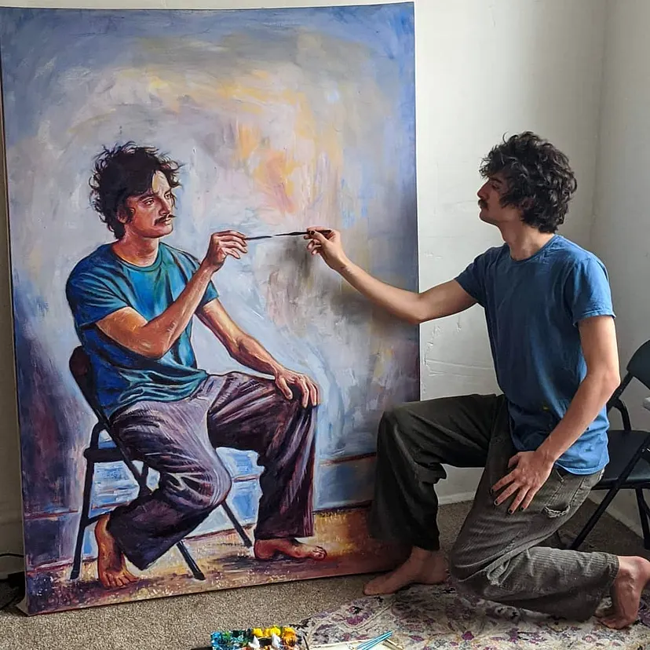

This research was conducted and this website was created as a part of the curriculum for the Independent Research course at Glenelg High School. This research aimed to provide an alternate understanding of the impacts of AI use, through the lens of that it takes away from human creation.
The paper itself can be viewed on the paper page. The other pages of this website aim to communicate the findings of this reserach, extrapolate trends and principles, and share my more personal beliefs about the research. This website will also contain other materials created as a part of the curriculum or as a part of the research process.
Research Context
As was said, this research was conducted as a part of the Independent Research course at Glenelg High School, overseen by Leila Chawkat. I chose this topic of research as generative AI use, or simply AI use, is becoming more and more prevalent and mainstream, with growing use to replace human work. Many people seek to embrace AI and improve it, but many others oppose AI.
In my research, I had noticed a noticable lack of data investigating the impact of generative AI use on psychological state the user, specifically when it is used in "creative industries" such as illustration.
In my conclusions and perspectives, as seen most prevalently in this website, I had also aimed to provide the frame of understanding that looks at all disciplines through the lens of how focused on product and how focused on process they are. For example, many dancers and performers find themselves "lost within the moment," focusing on the process of the dance. While in medicine, the goal is the product: to save and enhance lives.
Abstract
Modern society increasingly prioritizes final products over the creative process, a trend exacerbated by the rapid adoption of generative AI. This study aims to explore the impact of AI integration into the creative process on subjective well-being and fulfillment, and to determine whether these effects differ between individuals creating for leisure versus those creating for a profession. As a part of this research, a quantitative-focused survey was conducted with 200 working adults, categorized using a 2x2 design: acting as either a hobbyist or a professional illustrator, and either utilizing AI or not utilizing AI. The data reveals a consistent and statistically significant drop in a person’s well-being, across both hobbyist and professional groups when AI is utilized in the creative process. The differences in fulfillment drops between the hobbyist and professional groups were not statistically significant. While a positive correlation was found between a product-focused mindset and satisfaction among professionals using AI, the overall satisfaction for AI users across the board remained significantly lower than for those who did not use AI. Furthermore, while the data collection did not directly investigate forms of creative expression outside of what is traditionally considered an art, other potential avenues of creative expression, such as in “pure” STEM areas, show evidence of having similar psychological benefits, through a similar process to traditional arts. This relationship will have to be explored more directly in future studies. These findings suggest that the integration of AI into creative tasks carries measurable psychological costs by separating the creator from the intrinsically beneficial process of making. These findings underscore the value of human-made art and suggest that the ongoing conversation surrounding AI adoption must extend beyond efficiency to account for the human experience of creation, and the value of maintaining more psychologically healthy lives.

Perspective
Generally, whether or not generative AI use is “good” ultimately depends on the extent to which the creative and ingenuitive decisions matter within a discipline. In painting, the whole point is dominated by the creative decisions of the painter, and thus, using AI to substitute this is most detrimental and best to avoid. Within programming, it is more of a middle ground. While making programs involves many creative decisions and cognitive work, it is reasonable to simply desire a specific program that fulfills a task. Although human programming still gives more benefits to the programmer, AI use may not be as adverse. In fields such as medicine, however, AI should very much be implemented. Able to more quickly suggest possible treatments or design molecular structures, as long as it acts under human supervision so AI is not responsible for any decisions, it can greatly accelerate the thing that most matters within medicine, or the “product”: improving and saving lives.
When presenting an artwork to a viewer, people generally appreciate works more when they can sense the "passion" behind it, when appears human and is created by a human. As social creatures, people long for genuine expression, and knowing that a work was created with AI lessens that connection.